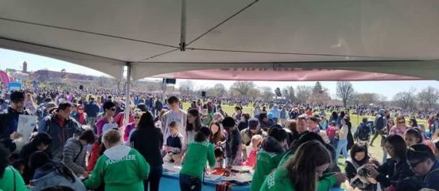
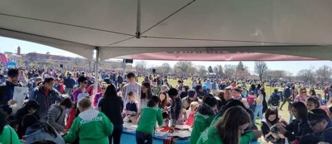

Jarett Ho
Currently I am an undergraduate student at University of California, Riverside. I am a pre-business major and a first year student. Before going to UCR, I attended Mark Keppel High School located in Alhambra, California. I graduated high school with a 4.3 average GPA. I also played basketball for my high school for all four years of my high school career. I was a part of highly respected clubs like the National Honor Society and California Scholarship Federation. In my last year of high school, I was a part of ASB, the Associated Student Body for the school. I was recognized for my academic effort and graduated with a Magna Cum Laude.
As an undergraduate at University of California, Riverside, I look to expand my knowledge in the world of business. I strive to make new friends and to learn more things. In the future, I hope to get into and study in Riverside's School of Business. This is where I will attain a Business Administration Major with a concentration in Finance. Additionally, I would like to eventually have a minor in Accounting. What I plan to do with my major, I hope to eventually become a financial manager of a company and help others manage their finances. Ideally in the future, I would like to strive to become a Chief Financial Officer of a well known and respected company. I know that it would take a while for me to reach that goal. However, I am willing to work hard and do what it takes to get there. Before I get to that goal, I, however, must focus on passing my current college classes and attaining all the information I can. I must work hard to get into Riverside's School of Business because it requires the best of the best to get in. I also plan on joining Business clubs to get more networking opportunities and to make more friends in my field.
Although I do not have much experience in the workforce, I have had many opportunities to volunteer at events. At these events, I engage with the public and help the community. In the past, I have volunteered for local school events, the cherry blossom festival held at my local park, as well as my local library. During these events, I enacted multiple tasks that include hard labor (moving chairs and tables), organizing booths, or assisting the event managers. I learned a lot of teamwork and communication during my time volunteering at these events. In the future, I plan to apply for internships so that I can get more experience in the workforce and learn under more experienced people in the business world. Currently, I know people that work for banking firms and accounting firms. Over the summer, I plan to take my time to apprentice some of the top employed positions and learn as much as I can about them. Once I am able to get into the School of Business at UCR, I will be able to dial in and focus more on my specified major.
Experience
Volunteer
• Donated old clothes and food
• Organized the funds
• Took down meeting minutes
• Drove to Downtown LA to pass out clothes, food, and water
Education
UC Riverside
Portfolio



